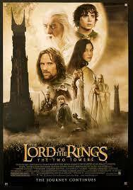

"The Two Towers" continues the saga with heightened intensity and complexity. The film delves deeper into the characters' struggles and introduces iconic elements like the Ents and Gollum. The battle of Helm's Deep stands out as a monumental cinematic achievement, showcasing the film's exceptional production values. As the story unfolds, the tension rises, leading to a gripping climax that leaves audiences eagerly anticipating the trilogy's conclusion.
The Two Towers' strength lies in its ability to maintain momentum while exploring darker themes. The performances, particularly Andy Serkis' portrayal of Gollum, are extraordinary. The film's visual effects set a new standard, and the Helm's Deep battle is a spectacle of epic proportions. With its seamless storytelling and memorable moments, "The Two Towers" stands tall in the fantasy genre.
